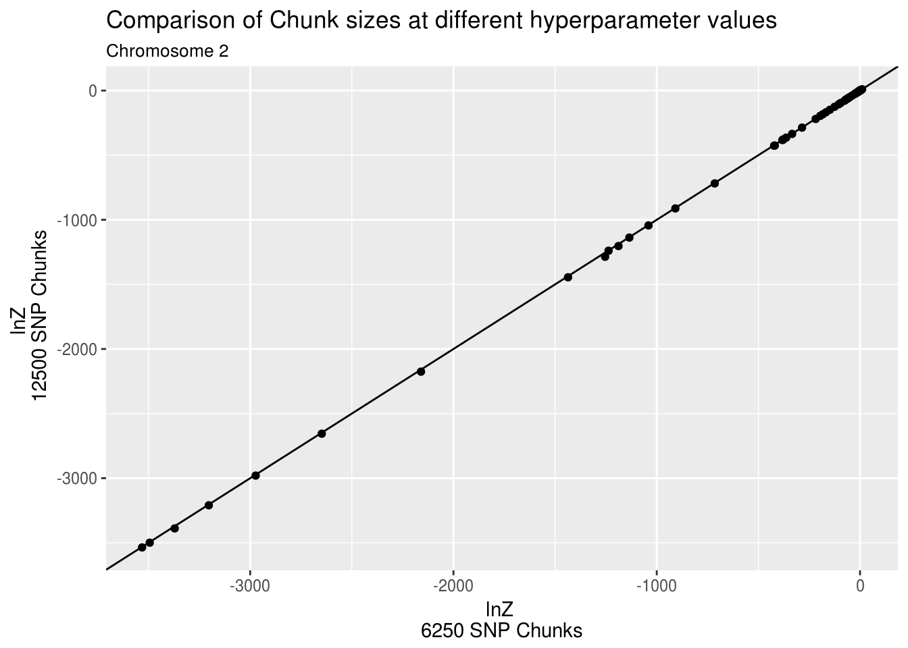

library(dplyr)
library(tidyr)
library(ggplot2)One of the key assumptions of the RSS method is that sites that are not in linkage disequilibrium from one-another are independent from one-another. This means that the likelhihood (or variational lower bound) for unlinked sites can be computed in parallel. In the original implementation of RSS, this was done at a chromosome by chromosome level. The chromosme with the largest number of SNPs is chromosme 2, with 1,348,518 SNPs. This means a 1,348,518*1,348,518 covariance matrix must be first computed, and then operated on for each iteration of the RSS algorithm. My eQTL analysis requires the analysis of a large number of traits, so this isn’t feasible.
My strategy to tackle this problem and increase parallelization is to chunk the genome into 25K SNP chunks. With a 5% allele frequency cutoff, there are 250 such chunks in a typical analysis. Not only is the memory requirement much smaller for a 25K SNP chunk, but it also appears that convergence is reached more quickly as well.
For this analysis I will run RSS over a grid (9x11) of parameter values on eQTL data for a gene chosen from the high heritability genes identified by Wright et al. I will be using GTEx Whole Blood genotype and expression data. I will limit my analysis to chromosome 2. To test the effect of chunking, I will use a chunk size of 6250 SNPs as well as a chunk size of 12500 SNPs, compute the variatonal lower bound for each chunk for each of the grid values, sum over the chunks, and compare the resulting 9x11 grid of lower bound values.
chunk_6 <- readRDS("../data/chunk_results/rss_6000.RDS")
chunk_12 <- readRDS("../data/chunk_results/rss_12500.RDS")
summ_6 <- group_by(chunk_6,logodds,sigb) %>% summarise(sum_lnZ=sum(lnZ)) %>% mutate(chunksize=6250) %>% ungroup()
summ_12 <- group_by(chunk_12,logodds,sigb) %>% summarise(sum_lnZ=sum(lnZ)) %>% mutate(chunksize=12500) %>% ungroup()
# summ_b <- rbind(summ_6,summ_12)
summ_b <- select(summ_6,-chunksize) %>% inner_join(select(summ_12,-chunksize),by=c("logodds","sigb"),suffix=c("_6250","_12500"))
summ_b <- mutate(summ_b,pi=exp(logodds)/(exp(logodds)+1))
# mutate(summ_b,chunkisze=paste0("chunksize_",chunksize)) %>% spread(chunksize,sum_lnZ) %>% head
ggplot(summ_b,aes(x=sum_lnZ_6250,y=sum_lnZ_12500))+geom_point()+geom_abline()+ggtitle("Comparison of Chunk sizes at different hyperparameter values",subtitle = "Chromosome 2")+xlab("lnZ \n6250 SNP Chunks")+ylab("lnZ \n 12500 SNP Chunks")
This plot shows that there is very little difference between the chromosome-wide lower bound estimates, and parameter estimates obtained by maximizing the lower bound is the same (\(\pi=6e-4\), $_{}=0.1)
library(RcppEigenH5)
library(rssr)
library(RSSReQTL)
library(dplyr)
snphf <- "/media/nwknoblauch/Data/GTEx/GTEx_rssr/wright_high_h2/SNP_Whole_Blood.h5"
exphf <- "/media/nwknoblauch/Data/GTEx/GTEx_rssr/wright_high_h2/EXP_Whole_Blood.h5"
a_groups <- list_groups_h5(exphf)
e_wb_ind <- read_vec(exphf,"/all/Whole_Blood")[1]
e_wb_file <- read_attr(exphf,"all","Whole_Blood_filepath")
a_groups <- list_groups_h5(snphf)
a_attr <- list_attrs_h5(snphf,"/1")
a_chroms <- sapply(a_groups,read_attr,h5filename=snphf,attrname="chromosome")
a_1kg <- sapply(a_groups,read_attr,h5filename=snphf,attrname="1kg_filepath")
a_wb <- sapply(a_groups,read_attr,h5filename=snphf,attrname="Whole_Blood_filepath")
chunk_chrom_df <- data_frame(chunk=a_groups,chromosome=a_chroms,kg_filepath=a_1kg,wb_filepath=a_wb)
chrom_size <- group_by(chunk_chrom_df,chromosome) %>% summarise(nchunks=n()) %>% arrange(desc(nchunks))
t_chrom <- filter(chunk_chrom_df,chromosome==2)
chunk_snps <- group_by(t_chrom,chunk) %>%do(data_frame(kg_ind=read_vec(h5filename=snphf,datapath=paste0(.$chunk,"/1kg")),
wb_ind=read_vec(h5filename=snphf,datapath=paste0(.$chunk,"/Whole_Blood")),
chromosome=.$chromosome,kg_filepath=.$kg_filepath,wb_filepath=.$wb_filepath)) %>%
ungroup()
unchunk_snps <- select(chunk_snps,-chunk)
rechunk_snps <- mutate(unchunk_snps,snp_ind=1:n(),
chunk_25k=ntile(snp_ind,22),
chunk_12k=ntile(snp_ind,44),
chunk_6k=ntile(snp_ind,88))
saveRDS(rechunk_snps,"~/Dropbox/Columbo/analyses/Snakemake_scripts/rechunk_SNPs.RDS")rechunk_snps <- readRDS("~/Dropbox/Columbo/analyses/Snakemake_scripts/rechunk_SNPs.RDS")
n6k <- length(unique(rechunk_snps$chunk_6k))
c6kfilen <- "/media/nwknoblauch/Data/GTEx/GTEx_rssr/chunk_comparison/SNP_Whole_Blood_6000.h5"
file.remove(c6kfilen)
#h5f <- h5file(c6kfilen,mode="a")
library(dplyr)
my_rechunk_snps <- rename(rechunk_snps,chunk=chunk_6k)
nchunk <- length(unique(my_rechunk_snps$chunk))
chunk_l <- split(my_rechunk_snps,my_rechunk_snps$chunk)
write_chunk <- function(chunknum,chunk_df,filename){
# cat(chunknum,"\n")
write_ivec_h5(filename,groupname=as.character(chunknum),dataname="1kg",data=chunk_df$kg_ind,deflate_level=4)
write_ivec_h5(filename,groupname=as.character(chunknum),dataname="Whole_Blood",data=chunk_df$wb_ind,deflate_level=4)
write_group_string_attr_h5(filename,as.character(chunknum),"1kg_filepath",chunk_df$kg_filepath[1])
write_group_string_attr_h5(filename,as.character(chunknum),"Whole_Blood_filepath",chunk_df$wb_filepath[1])
write_group_int_attr_h5(filename,as.character(chunknum),"chromosome",chunk_df$chromosome[1])
}
mapply(write_chunk,chunknum=1:length(chunk_l),chunk_df=chunk_l,MoreArgs = list(filename=c6kfilen))
c12kfilen <- "/media/nwknoblauch/Data/GTEx/GTEx_rssr/chunk_comparison/SNP_Whole_Blood_12500.h5"
chunk_l <- split(my_rechunk_snps,my_rechunk_snps$chunk_12k)
mapply(write_chunk,chunknum=1:length(chunk_l),chunk_df=chunk_l,MoreArgs = list(filename=c12kfilen))
c25kfilen <- "/media/nwknoblauch/Data/GTEx/GTEx_rssr/chunk_comparison/SNP_Whole_Blood_25000.h5"
chunk_l <- split(my_rechunk_snps,my_rechunk_snps$chunk_25k)
mapply(write_chunk,chunknum=1:length(chunk_l),chunk_df=chunk_l,MoreArgs = list(filename=c25kfilen))dir_6 <- dir("/media/nwknoblauch/Data/GTEx/GTEx_rssr/chunk_comparison/rss_6000/",full.names = T)
dir_12 <- dir("/media/nwknoblauch/Data/GTEx/GTEx_rssr/chunk_comparison/rss_12500/",full.names=T)
chunk_12 <- bind_rows(lapply(dir_12,readRDS))
chunk_6 <-bind_rows(lapply(dir_6,readRDS))
saveRDS(chunk_12,"../data/chunk_results/rss_12500.RDS")
saveRDS(chunk_6,"../data/chunk_results/rss_6000.RDS")sessionInfo()R version 3.3.3 (2017-03-06)
Platform: x86_64-pc-linux-gnu (64-bit)
Running under: Ubuntu 16.04.2 LTS
locale:
[1] LC_CTYPE=en_US.UTF-8 LC_NUMERIC=C
[3] LC_TIME=en_US.UTF-8 LC_COLLATE=en_US.UTF-8
[5] LC_MONETARY=en_US.UTF-8 LC_MESSAGES=en_US.UTF-8
[7] LC_PAPER=en_US.UTF-8 LC_NAME=C
[9] LC_ADDRESS=C LC_TELEPHONE=C
[11] LC_MEASUREMENT=en_US.UTF-8 LC_IDENTIFICATION=C
attached base packages:
[1] stats graphics grDevices utils datasets methods base
other attached packages:
[1] rssr_0.1-0 lazyeval_0.2.0 h5_0.9.8 RColumbo_0.1.0
[5] workflowr_0.4.0 rmarkdown_1.3 ggplot2_2.2.1 tidyr_0.6.1
[9] dplyr_0.5.0
loaded via a namespace (and not attached):
[1] Rcpp_0.12.10 knitr_1.15.1 magrittr_1.5
[4] munsell_0.4.3 colorspace_1.3-2 R6_2.2.0
[7] stringr_1.2.0 plyr_1.8.4 tools_3.3.3
[10] grid_3.3.3 gtable_0.2.0 DBI_0.6
[13] git2r_0.18.0 htmltools_0.3.5 RcppParallel_4.3.20
[16] yaml_2.1.14 assertthat_0.1 rprojroot_1.2
[19] digest_0.6.12 tibble_1.2 memoise_1.0.0
[22] RSQLite_1.1-2 evaluate_0.10 labeling_0.3
[25] stringi_1.1.2 scales_0.4.1 backports_1.0.5 This R Markdown site was created with workflowr